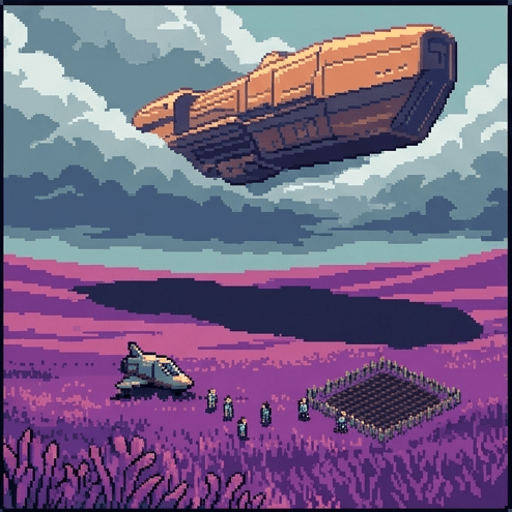
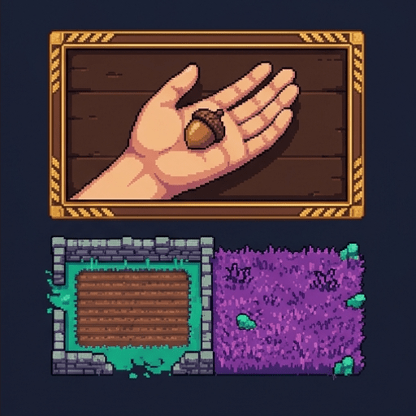
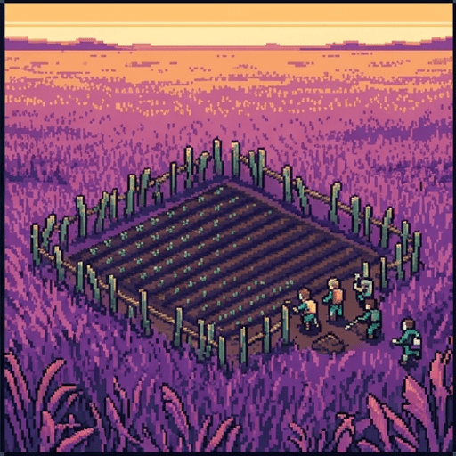
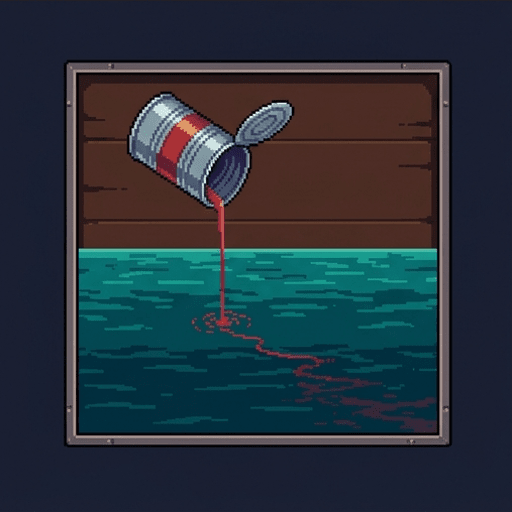
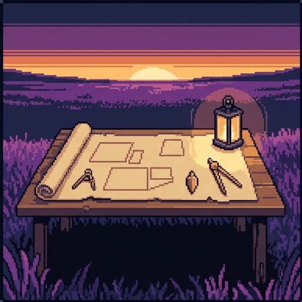
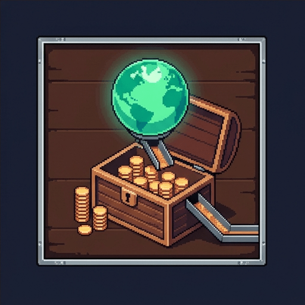
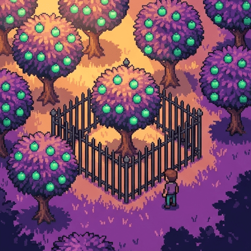
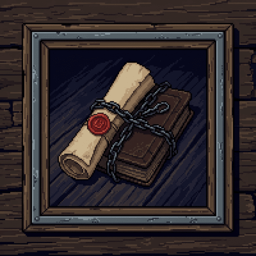

Enough and As Good
Forty people step out of a landing craft onto a world nobody has ever farmed, mined, or mapped. It could comfortably hold a billion.
The question they are about to face is much older than spaceflight, and nobody has settled it yet.
Use → (or Next) to advance and reveal points one at a time. F = fullscreen.

The Situation
- The forty are the first humans here. Nobody else has any claim to the place.
- They clear a field, build shelter, and fence what they have worked.
- A second ship is already on its way, carrying ten thousand more.
- Behind that one, in time, come as many people as the planet will hold.
Decision Point: Whose Planet Is It?
Not graded, and asked before any of the arguments. Answer with what you think now.
All of it. They got here first, and nobody else has any claim at all.
Only what they have actually worked. The rest is still unowned.
None of it. Nobody made the planet, so nobody can own it.
Six Statements, No Right Answers
Say where you stand now. You will see all six again at the end.
If you are the first person somewhere, what you find there is yours.
Working on something is what makes it belong to you.
Nobody can really own land, because nobody made it.
Owning much more than others is fair, so long as nobody is left with nothing.
Owning an idea is a different kind of thing from owning a field.
Property exists because governments say so, not because it is a natural right.

1689
Why Would Working on Something Make It Yours?
John Locke set out to answer a puzzle that sounds simple and is not. If the world was given to everyone in common, how does any part of it become one person's?
- Everyone around him agreed that owning things was normal. Almost nobody could say what made it legitimate.
- His answer is about a page long, and every argument that follows either comes from it or attacks it.
The Chain
Locke's argument runs in three steps, and each one has to hold for the next to work.
- You own yourself. Your body is yours, so the work your body does is yours too.
- When you mix that work with something unowned, you mix in something already yours.
- Doing that makes the thing yours. An acorn you pick up stops being common and becomes yours.
- This is the labour theory of property, and it is still how most people justify owning things.
Decision Point: The Acorn
Not graded.
The moment you pick it up. Gathering it is work, and work is enough.
Not until you plant it, or eat it, or do something with it.
Never, unless everyone else agrees that you may have it.
Checkpoint: What the Argument Rests On
That farmed land is more valuable than wild land.
That you own yourself, and therefore own the work your body does.
That whoever finds something first has a stronger claim than later arrivals.
That the earth was given to everyone in common to begin with.

What Stops You Taking Everything?
Locke could see that the argument as stated would let one person take a continent, so he attached a condition to it.
- You may take from what is unowned only where there is enough, and as good, left in common for others.
- Those seven words are the Lockean proviso, and people have argued about them ever since.
- Take one acorn from a forest full of oaks and nobody is worse off. Take the forest and they are.
And a Second Limit
Locke adds another condition straight afterwards, and it is the one people forget.
- You may take only as much as you can use before it spoils.
- Gather more apples than you can eat and the surplus was never yours. You wasted what belonged to others.
- Between them, the two limits keep holdings small. Nobody can pile up much that rots.
- Anything past that, Locke says, is "more than his share, and belongs to others".
How Much May the Forty Take?
Move the slider, then change how many people eventually arrive. Three ways of reading enough, and as good give three different answers.
Checkpoint: What Locke Actually Says
You may take what is unowned only if enough and as good is left for others.
You may not take more than you can use before it spoils.
Owning yourself is what makes the work of your body your own.
Whoever reaches an unowned place first is the owner of all of it.
Property comes into existence only once a government has created it.
Then Money Arrives
Both of Locke's limits work only because things rot. Halfway through his own chapter, he removes one of them.
- Gold and silver do not spoil. You can hold them for a lifetime and waste nothing.
- So you may sell your surplus apples for coin, and keep the coin honestly, however much piles up.
- The spoilage limit is now toothless. It forbids hoarding food and permits hoarding wealth.
- Locke says that by agreeing to use money, people tacitly consented to unequal holdings.
Decision Point: Did Anyone Agree to This?
Not graded.
Yes. Anyone who takes payment has accepted the system that comes with it.
No. Using the only money there is cannot count as choosing it.
It bound whoever first adopted it, but nobody since has been asked.
What That Move Does
This is the hinge of the whole chapter, and it is easy to read straight past.
- Locke opens with limits so tight that nobody could own very much at all.
- He closes with a defense of large unequal estates, having never withdrawn a word.
- Only the spoilage limit dissolves. Enough, and as good is left standing.
- That is why the proviso is the part still argued over. It is the limit that survived.

1974
Does Mixing Even Work?
Robert Nozick was broadly on Locke's side, and he still asked why mixing your work into something should be a way of gaining rather than a way of losing.
"If I own a can of tomato juice and spill it in the sea so that its molecules… mingle evenly throughout the sea, do I thereby come to own the sea, or have I foolishly dissipated my tomato juice?"
— Robert Nozick, Anarchy, State, and Utopia, 1974
Decision Point: The Tomato Juice
Not graded.
Gained a sea. Your juice is now in every part of it.
Lost a can of juice. Mixing does not make things yours.
Neither. The case shows that mixing was never the real explanation.

And How Far Does a Claim Reach?
Even if mixing works, Locke never says how much of the world one piece of work buys you.
- You clear one field in a valley. Do you own the field, the valley, or the continent?
- The forty plough a hundred acres and draw their boundary around a hemisphere.
- Locke's answer is that you own what you have worked, and working is a matter of degree.
- Every land claim in history has had to answer this, and most have answered generously.
Fill In: The Argument and Its Limits
Complete the summary so far:
Locke begins by claiming that you own
yourself,
so the work of your body is already yours to mix into things. He limits this with the proviso, which says enough and as
good
must be left for others, and with a second rule against taking more than you can use before it
spoils.
The second limit stops mattering once there is money, because gold does not
spoil.
What the Argument Was Used For
Locke was not a detached scholar writing about imaginary islands. He had a direct interest in colonial land.
- He was secretary to the Lords Proprietors of Carolina and helped draft its constitutions.
- Those constitutions granted every freeman "absolute power and authority over his negro slaves".
- He held shares in the Royal African Company, which traded in enslaved people.
- The same book also contains a fierce condemnation of slavery. Scholars have argued about that ever since.
How the Limit Was Made Toothless
Chapter Five talks about "the vacant places of America" and about people who leave land unenclosed.
- The reasoning runs: unworked land is unowned, and land that is not enclosed and farmed counts as unworked.
- Anyone already living there is then not an owner but an occupant, and the ground is free to take.
- Because the land counted as empty, enough and as good was left by definition. A limit met automatically is not a limit.
- Lawyers later hardened this into a doctrine with a name: terra nullius, nobody's land.
Checkpoint: What Happened to the Proviso
It was replaced with a different rule about who arrives somewhere first.
It was genuinely satisfied, because there really was enough for everyone involved.
The land was described as empty and unowned, so the condition was met automatically.
It was read as covering land only, and not anything else you might own.
One Premise, Two Politics
Two traditions start from Locke's self-ownership and finish in opposite places. The proviso is where they part.
The world began unowned. You may take from it, and the only test is whether anyone ends up worse off than they would have been had nobody taken anything at all.
Since an economy with property makes almost everyone richer than a wild planet would, nearly every holding passes the test.
The world began owned by everyone in common. You may still take, because land left idle feeds nobody, but you have taken something that was not only yours.
So you keep what you built and pay the rest of humanity for the ground you built it on.
- Both hold that you own yourself. They differ on one question: what the world was before anyone touched it.

1797
Paying the Rent
Thomas Paine made the left-libertarian case a century after Locke, and attached an actual scheme to it.
"The earth, in its natural uncultivated state was, and ever would have continued to be, the common property of the human race."
— Thomas Paine, Agrarian Justice, 1797
- Improvers keep what they add. What they may not keep is the value of ground they did not make.
Decision Point: What Was the World Before Us?
Not graded. Almost every argument about tax, land and inheritance runs back to this question.
Unowned. Nobody had any claim until somebody did the work.
Owned by everybody equally, because nobody made it and we all arrived to it.
Neither. Ownership is not something the world comes with.

Can You Own an Idea?
Everything so far has been about land, which has a hard edge and runs out. Ideas do neither.
- If I use your field, you cannot. If I use your idea, you still have all of it.
- Something that cannot be used up this way is called non-rivalrous.
- So the proviso looks automatically satisfied. Learning a song leaves the song exactly as it was.
- That is the strongest Lockean case there is for owning what you think of.
The Reversal
The same feature runs the other way the moment owning means the right to stop other people.
- A patent takes nothing from an infinite pool. It removes from common use something everyone could use before.
- Yesterday anyone could use that method. Today one person may. That is less left for others, not more.
- And every idea is built out of earlier ones, so Locke's claim that labour supplies almost all the value runs backwards here.
- The question becomes how much of a shared inheritance one person may fence, and for how long.
Decision Point: Which Has the Weakest Case?
Not graded, and the law disagrees with itself about all three.
A song you wrote.
A gene sequence you were the first to identify.
A mathematical proof you discovered.
Checkpoint: Ideas and the Proviso
Using an idea does not use it up, so many people can hold the same one at once.
A patent removes from common use something that everyone could use before it existed.
Locke's claim that labour supplies most of a thing's value is harder to apply to ideas, which are built out of earlier ideas.
Because ideas cannot run out, owning one can never breach the proviso.
Copyright and patents last forever, so their duration raises no question.

Or Is Property Just Useful?
There is a completely different answer to the original question, and it does not use rights at all.
"Property and law are born together and die together. Before laws were made there was no property; take away laws, and property ceases."
— Jeremy Bentham, Principles of the Civil Code
- On this view property is not discovered but invented, and it is judged by what it produces.
Two Ways to Justify the Same Fence
Property exists before any government, because working on a thing makes it yours. A state that seizes it does something wrong rather than merely changing a rule.
The proviso is a boundary you may not cross, even when crossing it would make everyone better off.
Property exists because secure holdings produce more food, more building and less fighting than the alternatives. There is no natural right there to breach.
The proviso is worth keeping exactly as long as keeping it makes the system work better.
- Locke keeps sliding into the second. He argues that enclosure raises the common stock so far that a landless English labourer eats better than a king in America.
Fill In: Three Answers to One Question
Complete the account of where the argument ended up:
Nozick and the left-libertarians both accept that you own
yourself,
and disagree about whether the world began
unowned
or owned by everyone in common. Paine held that improvers keep what they add but owe
rent
on ground they did not make. Bentham rejected the question, holding that property is created by
law.
This Is Live Law
The argument is not settled, and states are currently having it about actual worlds.
- The Outer Space Treaty of 1967 says space and the celestial bodies are not subject to national appropriation.
- Not by claim of sovereignty, not by use, not by occupation. That is a flat rejection of first-taking.
- A United States statute of 2015 grants its citizens ownership of resources they extract out there.
- The treaty forbids owning the ground. The statute permits owning what you dig out of it.
The Second Vote
The ten thousand have landed. The forty have a fenced field, a mill, and a claim drawn around a hemisphere.
The forty keep what they fenced. The rest is open to whoever works it next.
The forty keep what they worked and pay the newcomers for the ground.
Nobody owns any of it. The land is held in common and shared out by agreement.
Where You Stand Now
Here is where you stood before any of the arguments. Re-rate each statement and see what moved.
Seven words have been carrying the weight the whole way: enough, and as good, left in common for others. Almost everyone agrees to them. Almost nobody agrees about what they mean, and the difference decides who gets a world.
Visit every slide, answer each question correctly, and rate all six statements to complete the lesson.